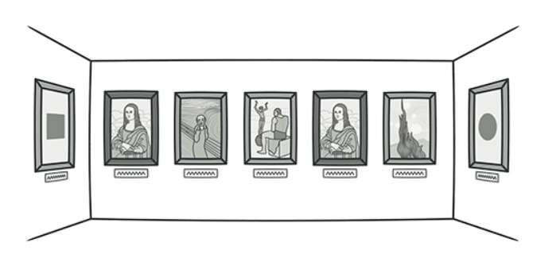
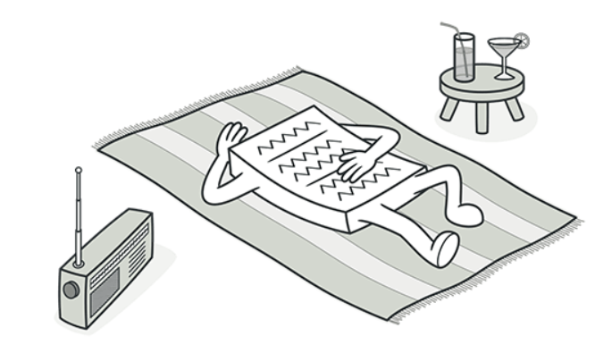
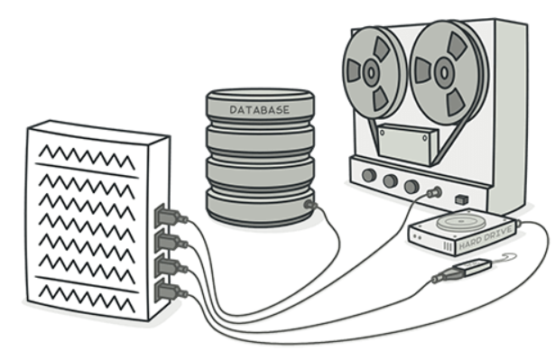
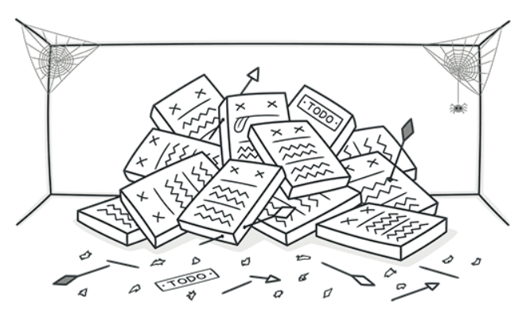
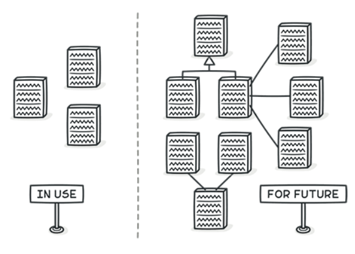

Duplicate Code

Duplicate Code(duplikasi kode) yang sangat kecil atau tidak signifikan mungkin dianggap sebagai bau kode yang bisa diabaikan. Meskipun menghindari duplikasi kode adalah prinsip dasar dalam pengembangan perangkat lunak, beberapa kasus duplikasi yang sangat kecil mungkin tidak mengganggu performa atau maintenance kode. Solusinya adalah dengan identifikasi pola-pola duplikasi kode dan ekstraklah ke dalam fungsi atau kelas terpisah.
Contoh Code nya sebagai berikut :
Sebelum Refactor | Setelah Refactor
Lazy Class

Kelas yang tidak melakukan banyak pekerjaan atau memiliki sedikit fungsi dapat dianggap sebagai bau kode yang bisa diabaikan. Mereka mungkin tidak memberikan nilai tambah yang cukup besar untuk membenarkan keberadaan mereka, tetapi mereka tidak secara langsung menyebabkan masalah dalam kode.
solusinya adalah tinjau kelas untuk menilai apakah setiap kelas memiliki tanggung jawab yang cukup untuk membenarkan keberadaannya. Jika tidak, pertimbangkan untuk mengintegrasikan fungsionalitasnya ke dalam kelas lain atau menghapusnya sepenuhnya untuk menyederhanakan desain.
Contoh Code nya sebagai berikut :
Sebelum Refactor | Setelah Refactor
Data Class

Kelas yang hanya berisi atribut tanpa metode yang signifikan atau perilaku tambahan (hanya berisi setter dan getter) sering kali dianggap sebagai smell code yang bisa diabaikan apabila skala program masih tergolong kecil namun akan menjadi code smell apabila program sudah semakin besar. Mereka cenderung hanya menyimpan data tanpa melakukan operasi yang kompleks atau memiliki fungsionalitas yang substansial. solusinya adalah evaluasi kelas untuk menentukan apakah ia hanya menyimpan data tanpa perilaku tambahan yang berguna atau tidak. Jika iya, pertimbangkan untuk mengubahnya menjadi struktur data atau objek bernilai yang lebih sederhana agar lebih jelas dan terfokus.
Contoh Code nya sebagai berikut :
Sebelum Refactor | Setelah Refactor
Dead Code

Code yang tidak lagi digunakan atau tidak diakses dalam aplikasi sering kali dianggap sebagai bau kode yang bisa diabaikan. Meskipun kode ini tidak berdampak pada perilaku aplikasi, keberadaannya mungkin meningkatkan kebingungan dan mempersulit pemahaman tentang bagian kode yang masih aktif. solusinya adalah tinjau kode untuk mengidentifikasi bagian-bagian yang tidak lagi digunakan dan hapus atau komentari kode yang tidak relevan tersebut. Dengan membersihkan kode mati, Anda dapat mempertahankan kejelasan dan kesederhanaan kode.
Contoh Code nya sebagai berikut :
Sebelum Refactor | Setelah Refactor
Speculative Generality

Pembuatan abstraksi yang berlebihan atau generalisasi sebelum kebutuhan sebenarnya muncul dapat dianggap sebagai bau kode yang bisa diabaikan. Hal ini terutama terjadi ketika kita menciptakan struktur yang kompleks atau hierarki kelas yang tidak diperlukan pada saat itu, tetapi lebih sebagai antisipasi akan kebutuhan di masa depan. solusinya adalah Pertimbangkan untuk meninjau struktur atau hierarki kelas untuk mengevaluasi apakah abstraksi atau generalisasi yang diterapkan benar-benar diperlukan saat ini. Jika tidak, mundur dari generalisasi tersebut dan fokuskan pada solusi yang lebih sederhana yang sesuai dengan kebutuhan saat ini.
Contoh Code nya sebagai berikut :
Sebelum Refactor | Setelah Refactor